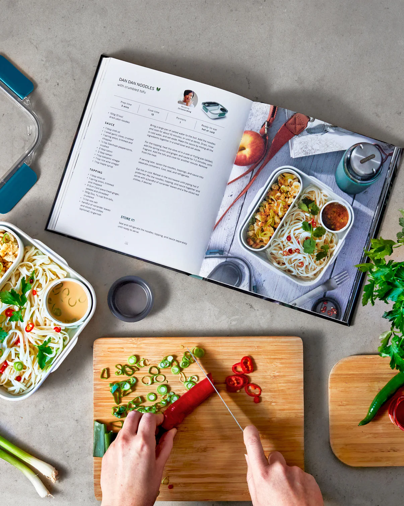

NPY Recipes Website
Homepage

Recipe book
Why does simple recipes matter?
Simple recipes are critical here because they provide cooking with an achievable outlet for everyone, regardless of skills. This type of cooking also minimizes the psychological burdens of stress and time-orientation that normally go with meal preparation; it allows people to prepare delicious meals while at the same time feeling comfortable rather than pressured. Simple recipes opened up creativity because they develop a solid basis that could easily be converted into one's taste or agenda of dietary preferences. In addition, these simple recipes are quite ideal for busy people or families, as they enable the preparation of healthy, home-cooked meals even on days that are hectic. In a world in which fast takes precedence over quality, simple recipes will facilitate eating well while still connected to the joys of cooking.

Types of Cuisines over the globe.
Types of Cuisines around the world.
Japanese Cuisine
Chinese Cuisine
French Cuisine
Italian Cuisine
Greek Cuisine
Thai Cuisine